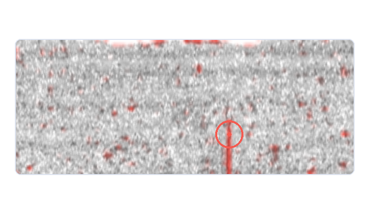
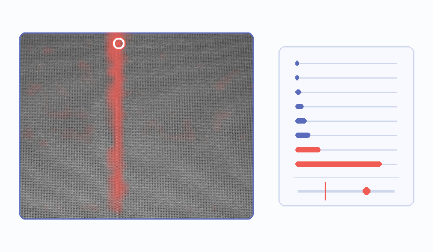

01
Build the reference
Collect normal patches.
TWO PIPELINES · ONE INSPECTION GOAL
A surface-inspection baseline and a new pipeline for changing production streams.
Explore the pipelines ↓
01 BASELINE
02 CHANGE AWARE01 / WORKING MVP
KolektorSDD · metal surface photos
Collect normal patches.

Align size and brightness.

Inspect the surface area by area.

Capture local texture and edges.

Find the closest normal match.

Highlight regions for review.
HELD-OUT TEST
64 photos · grouped split
Scores are distances from normal patches, not defect probabilities.
Open baseline samplesFIELD FEEDBACK
Build the reference from unlabeled frames.
Detect change before considering a model update.
Prepare a daily review handoff.
02 / RESEARCH PIPELINE
TSFabrics · real, time-ordered production photos

Read consecutive production frames.

A frozen DINOv2 model maps image patches.

Keep stable startup frames without defect labels.

Compare patches and flag high scores.

Watch the image stream for distribution change.

Compare a candidate reference before switching.
Public textile data tests the workflow; it does not validate rubber-belt performance.
Open new pipeline samplesFINAL STEP · PLANNED
Bring flagged frames, condition shifts, and reviewer notes into one handoff.